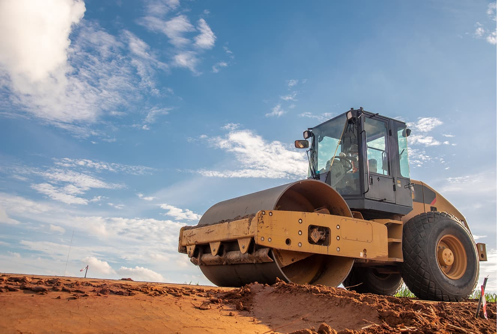
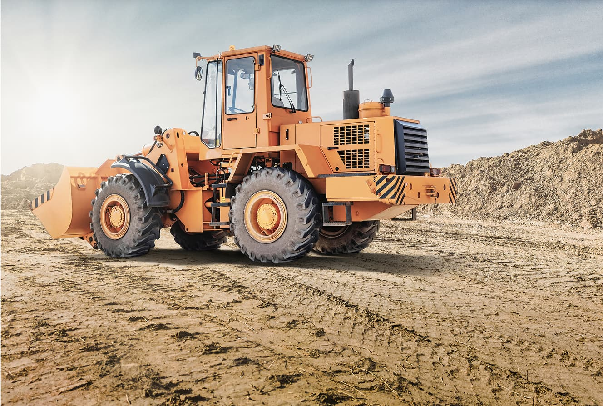

У світі будівництва, логістики та промисловості спецтехніка — це незамінний помічник, який робить роботу швидшою, безпечнішою і ефективнішою. Але що саме ховається за словами «крани», «вантажні машини» та «спецтехніка»? Спробуємо розібратися разом, простою та зрозумілою мовою.
Що таке спецтехніка? Спецтехніка — це різні види машин і механізмів, які створені для виконання спеціальних завдань. Це не просто автомобілі, а потужні і часто дуже складні машини, які допомагають піднімати важкі вантажі, перевозити будівельні матеріали, копати землю, або навіть розбирати будівлі.
Чому спецтехніка важлива? Ці машини допомагають робити те, що людині вручну дуже важко або неможливо — підняти тонни бетону, швидко перемістити будівельні матеріали, підготувати майданчик для будівництва. Вони економлять час, зменшують ризик травм і роблять роботу більш якісною.
Як вибрати спецтехніку? Вибір залежить від завдань. Наприклад, якщо потрібно піднімати важкі вантажі на висоту — потрібен кран. Якщо потрібно перевезти будівельні матеріали — вантажівка або самоскид. Важливо враховувати вантажопідйомність, тип місцевості, на якій буде працювати техніка, та умови експлуатації.
Спецтехніка — це потужні помічники у будівництві та логістиці. Знання основних видів і призначення цих машин допоможе краще орієнтуватися у світі техніки та вибирати правильні рішення для будь-яких задач.

